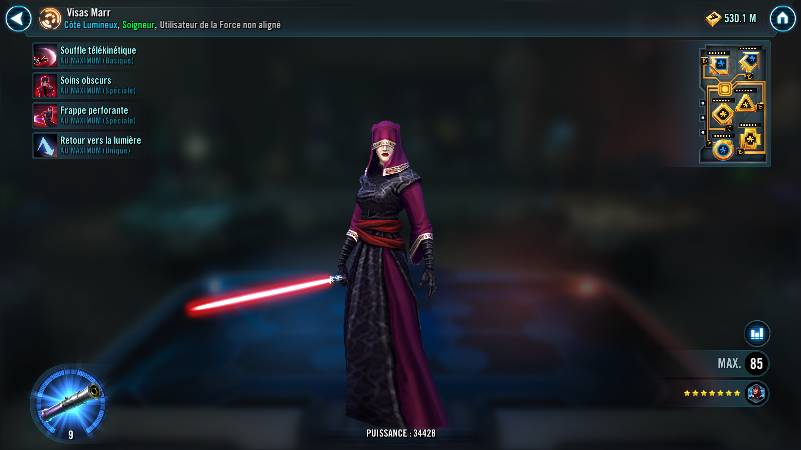
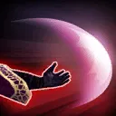

Visas Marr
Offensive Healer with strong anti-Sith synergy
Offensive Healer with strong anti-Sith synergy


Deal Physical damage to target enemy and dispel all debuffs on Visas and another random debuffed ally. If the target is Sith, Visas Marr and her lowest-Health ally also recover 25% Max Health. If any debuffs were dispelled, reduce the cooldown of Dark Healing by 1.
Deal Physical damage to all enemies. All allies gain Health Steal Up for 1 turn and recover Health equal to 35% of Visas Marr's Max Health. If Visas Marr is at full Health after using this ability, revive a random defeated ally at 50% Health.
Deal Physical damage to target enemy and grant all allies Defense Penetration Up for 2 turns. This attack ignores Protection.

While Visas Marr has no debuffs, she has +100% Counter Chance and a 60% chance to Assist when another ally attacks Sith enemies once per turn.